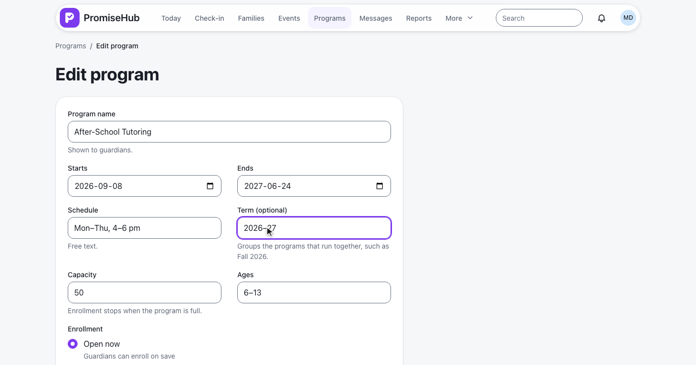
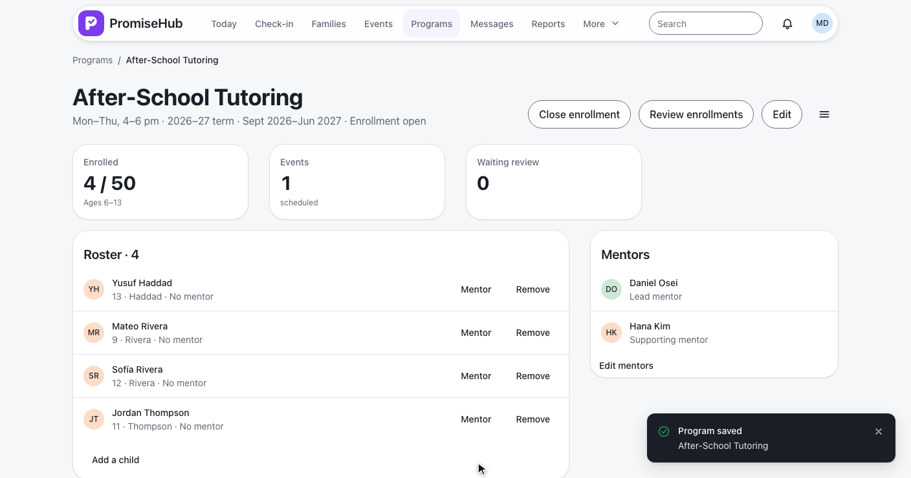
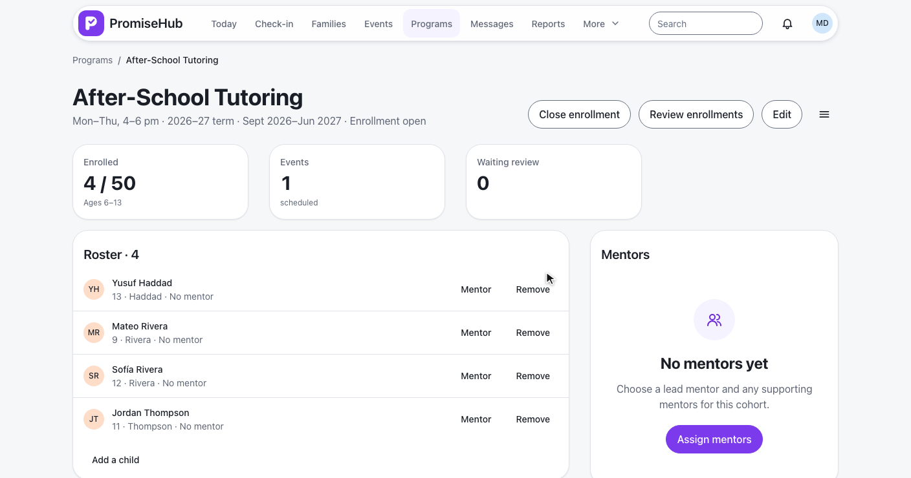
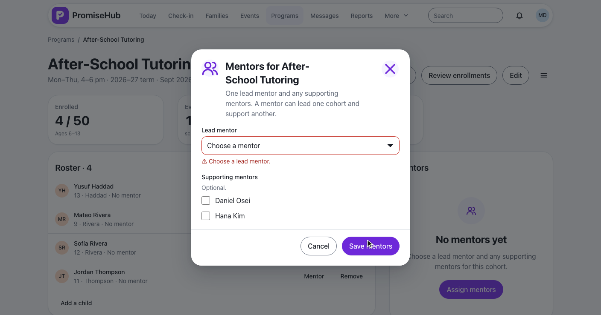
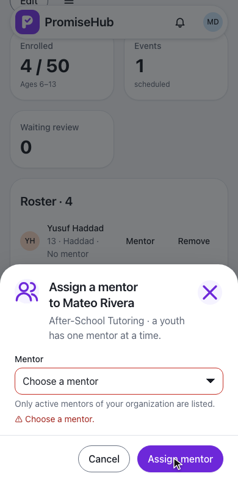
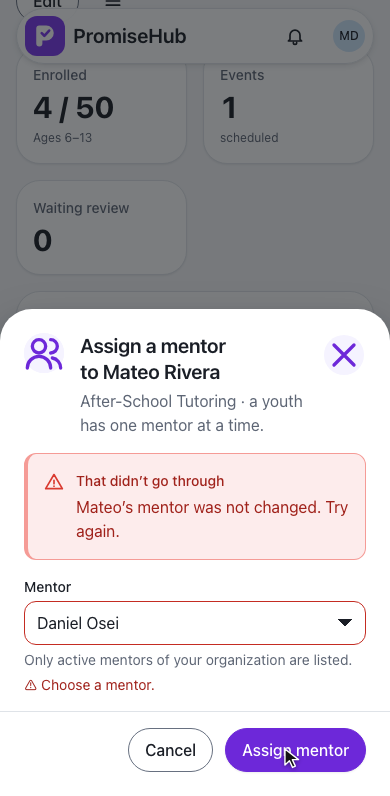
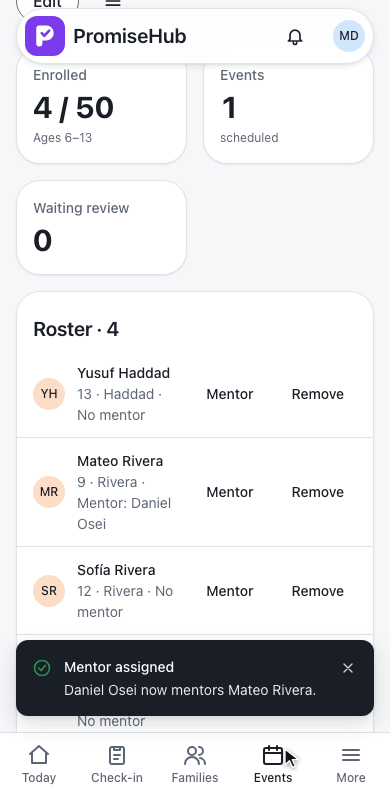
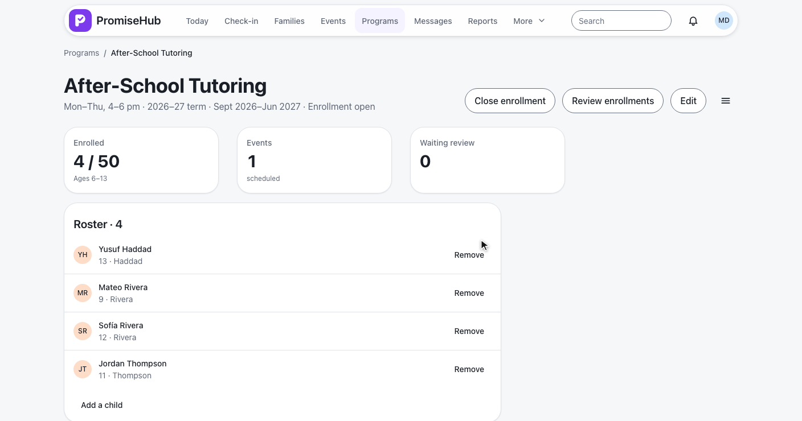
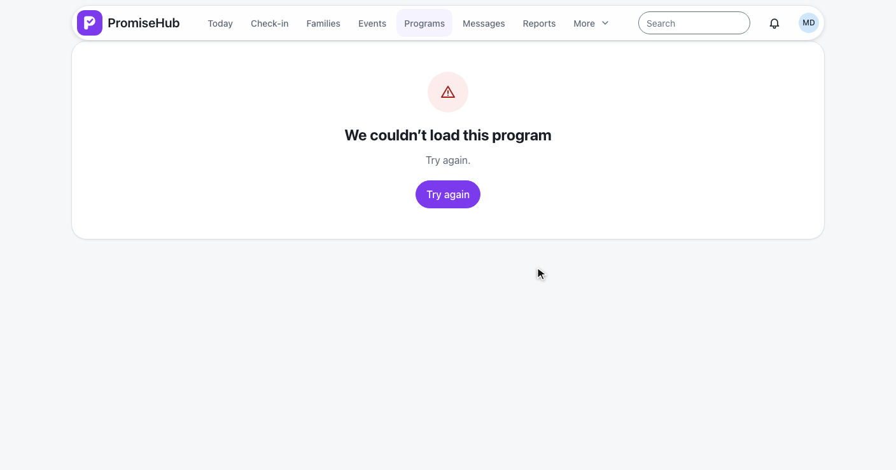

PromiseHub · Video 54
Manage cohorts and assign mentors
A term on each program, one lead and any supporting mentors, and one mentor per youth
A term on each program, one lead and any supporting mentors, and one mentor per youth
PUT /programs/{id} with term, up to 40 characters.


ADR 0048 · the program's dates bound the term · audited as Updated on Program
| Add a child | Answer |
|---|---|
| Room on the roster | 201, on the roster at once |
| Already enrolled, full or archived | 422 with the reason |
| Placed youth opens Learning | GET /learning/lessons → 200 (L2-060) |
PUT /programs/{id}/mentors replaces the team.



PUT /programs/{id}/youth/{childId}/mentor



Audited as Updated (or Deleted) on YouthMentor
GET /mentoring/youth: direct assignments plus the rosters of his cohorts.


| Caller | Answer |
|---|---|
| Admin, program director | Read and change |
| Site lead, youth worker, coordinator | Read; 403 on change |
| Youth, mentor, volunteer | 403 |
| Mentoring or Roster off | 404 |
| Another organization's cohort | 404 |
| Archived cohort | 422, read only |
CohortTests: term saved, listed and audited; long term; placing; roles, tenancy, Roster offMentorAssignmentTests: read, assign, replace, remove; team rules; mentor lists; roles, tenancy, archived, both modules offcohorts and assign-mentors specs on phone and laptop, with axe
Next: mentors use their dashboard